VS Code에서 R 실행하기
R과 VS Code, R 확장, AI 에이전트 확장을 설치해 VS Code에서 R 스크립트를 한 줄씩 실행하는 작업환경을 만든다. R을 쓰는 자료를 따라 하기 전에 한 번만 해 두면 된다.
- 설치하는 것
- R, VS Code, R 확장(REditorSupport)과
languageserver패키지, Google Antigravity 확장. 노트북 없이.R스크립트만 쓴다. - 운영체제
- Windows와 macOS. Windows는 터미널에서
R.exe를 바로 실행하도록 PATH에 등록하는 방법까지 다룬다. - 이 환경을 쓰는 자료
- R을 이용한 평균검정. 폴더를 열고 첫 스크립트를 실행하는 것부터 시작한다.
- 함수 도움말
- 코드에서 점선 밑줄이 있는 함수 이름에 마우스를 올리면(휴대폰은 누르면) 목적, 인수, 반환값이 나타난다.
작업환경: VS Code에서 R 실행하기
스크립트 파일에 코드를 적고, 한 줄씩 R 터미널로 보내 실행한다. 막히는 곳은 VS Code 안의 AI 에이전트에게 묻는다. 아래 다섯 가지를 순서대로 설치한다. Windows에서는 4번과 5번 사이의 PATH 설정도 해 둔다.
- R 설치. cran.r-project.org에서 운영체제에 맞는 설치 파일을 받아 기본 옵션으로 설치한다. macOS는 프로세서(Apple silicon, Intel)에 맞는 파일을 고른다. 처음 설치한다면 아래를 펼쳐 그림과 함께 따라 한다.
R 설치 방법 자세히 보기 (Windows · macOS)
R은 운영체제에 따라 설치 파일이 다르다. 두 경우 모두 출발점은 같다.
https://r-project.org에 접속해 왼쪽 메뉴의 CRAN(또는 본문의 download R)을 누른다.- 내려받을 서버(미러) 목록이 나온다. 맨 위의 0-Cloud나 Korea 아래의 주소 중 하나를 고른다.
- 2026년 9월 현재 대한민국에서 제공하는 Mirror Site 가 없어 다음의 기본 Repository 선택
- 0-Cloud:
https://cloud.r-project.org/
- 자기 운영체제에 맞는 링크를 누르고 아래 설명을 따른다.
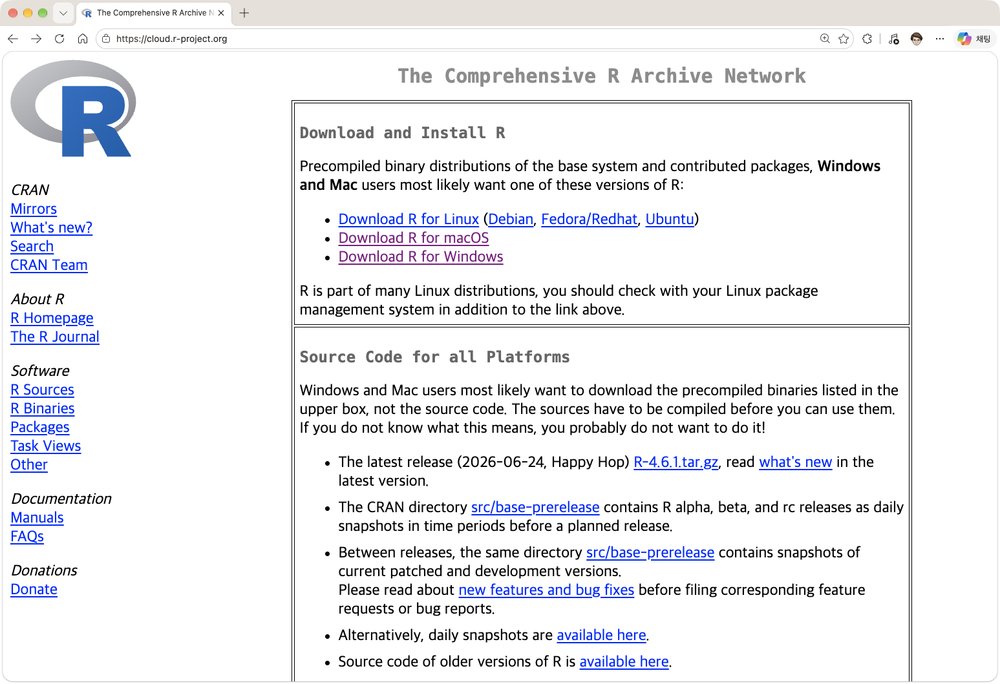
https://cloud.r-project.org 의 화면으로 본인의 운영체제에 맞는 링크를 클릭 Windows
- Download R for Windows Click
- base Click
- 맨 위의 Download R-4.x.x for Windows를 눌러 설치파일을 받는다.
- 받은 파일을 실행한다. 설치 언어는 한국어를 고르고, 나머지는 기본값 그대로 다음을 눌러 끝낸다.
- 설치 위치(기본값
C:\Program Files\R\R-4.x.x)를 확인한다. 아래 "Windows: 터미널에서 R.exe를 바로 실행하게 하기"에서 쓴다.
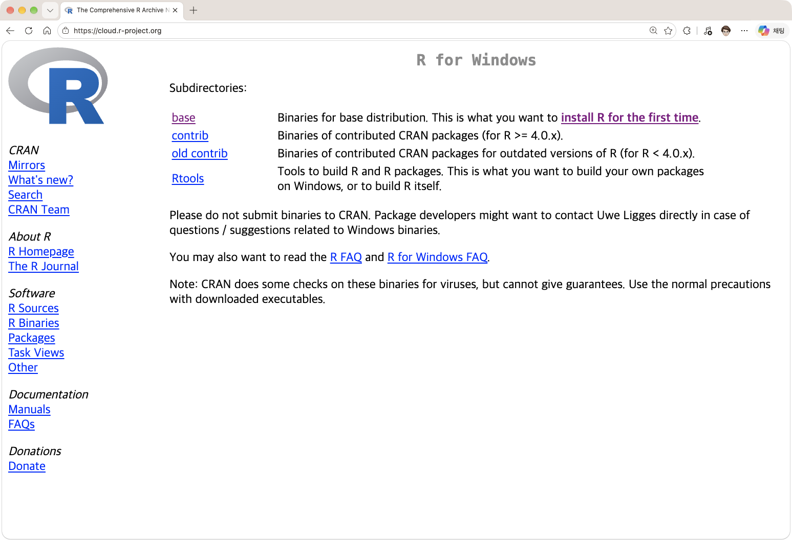
설치파일 다운로드를 위해 base 클릭 macOS
- 먼저 자기 Mac의 프로세서 종류를 확인한다. 화면 왼쪽 위 사과 메뉴 → 이 Mac에 관하여를 열고 아래 표와 맞춰 본다.
- Download R for macOS를 누른다.
- 표에서 확인한 프로세서 종류에 맞는
.pkg파일을 받는다. - 받은 파일을 실행하고 기본값 그대로 계속을 눌러 설치한다.
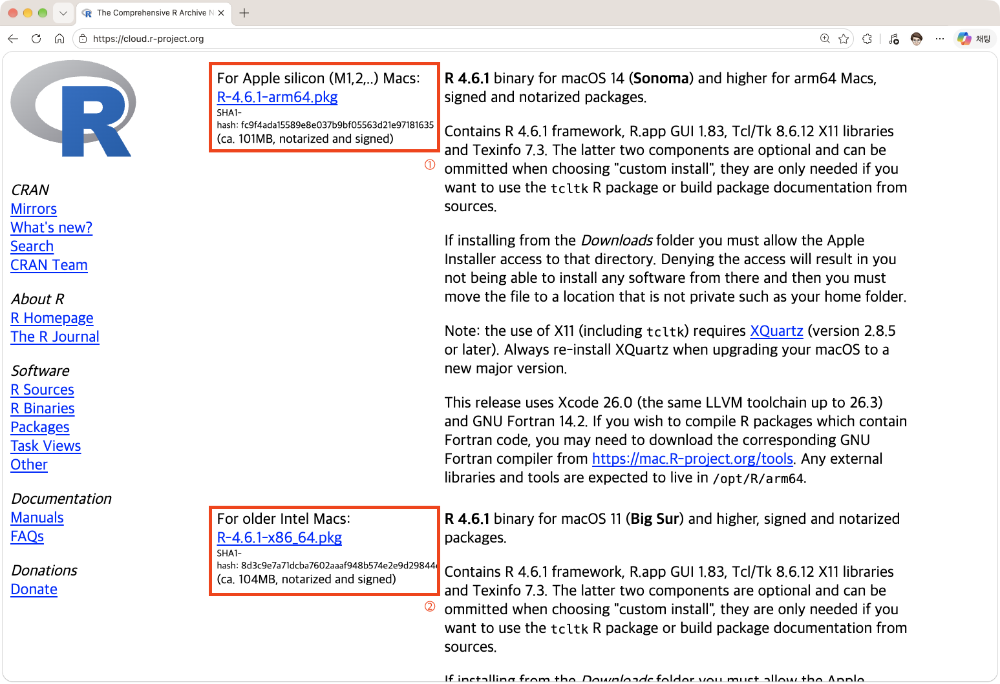
자신의 프로세서에 맞는 설치파일 선택(1: Apple Silicon, 2: Intel) 화면에 나오는 것 프로세서 종류 받을 파일 칩: Apple M1, M2, M3 … Apple silicon 이름에 arm64가 있는.pkg프로세서: … Intel … Intel 이름에 x86_64가 있는.pkg잘못 받기 쉬운 곳 macOS에서 프로세서 종류에 맞지 않는 파일을 받으면 설치는 되지만 패키지 설치에서 오류가 난다. 파일 이름의arm64와x86_64를 꼭 확인한다.설치 확인
설치된 R 프로그램을 실행한다(Windows: 시작 메뉴의 R, macOS: 응용 프로그램의 R). 창이 뜨면 다음 코드를 입력해 버전이 출력되는지 본다.
RR.version.string
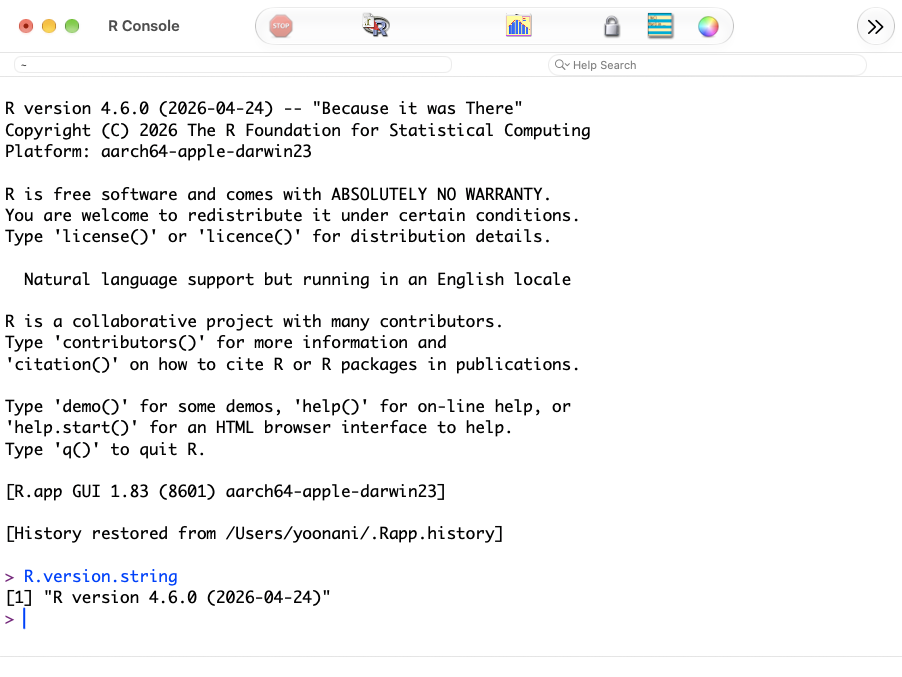
R 버전 확인 - VS Code 설치. code.visualstudio.com의 첫 화면에서 내려받기 버튼을 누르면 운영체제에 맞는 파일을 받는다.
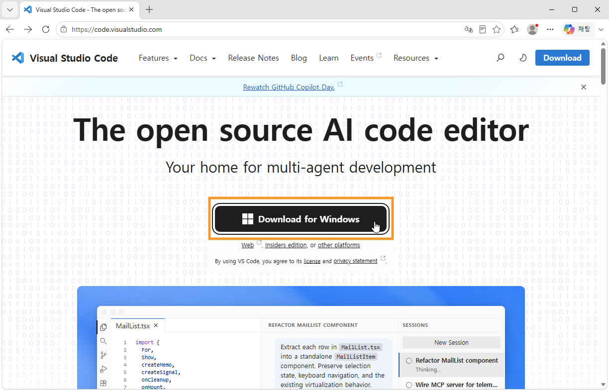
홈페이지에서 Download for ... 를 클릭해 설치파일을 다운로드 받는다 - Windows: 받은 설치 파일을 실행하고 기본 옵션으로 진행한다. "PATH에 추가" 항목은 체크된 그대로 둔다.
- macOS: 받은 파일의 압축을 풀고
Visual Studio Code앱을 응용 프로그램 폴더로 옮긴 다음 실행한다.
VS Code 화면 구성 살펴보기
Visual Studio Code(이후 VS Code로 지칭)의 화면은 아래 여섯 영역으로 이루어진다. VS Code 공식 문서를 ChatGPT로 번역한 것이다(원문).
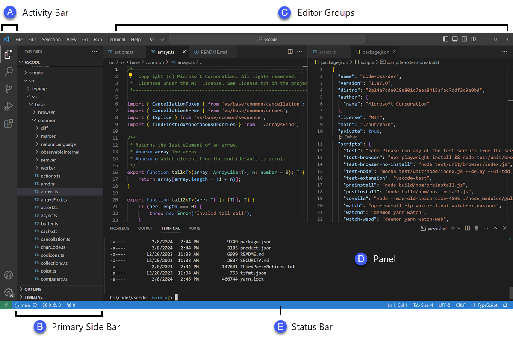
A 활동 표시줄, B 기본 사이드바, C 편집기, D 패널, E 상태 표시줄. 보조 사이드바는 이 그림에 나오지 않는다. (그림 출처: VS Code 공식 문서) - 편집기(Editor) - 파일 내용을 작성하고 수정하는 중심 공간이다. 여러 파일을 위아래 또는 좌우로 나란히 열어 놓고 작업할 수 있다.
- 기본 사이드바(Primary Side Bar) - 프로젝트 작업을 도와주는 여러 화면이 표시되는 공간이다. 파일과 폴더를 살펴보는 탐색기(Explorer) 등이 여기에 있다.
- 보조 사이드바(Secondary Side Bar) - 기본 사이드바의 반대쪽에 있는 공간이다. 처음에는 채팅(Chat) 화면이 표시된다. 기본 사이드바에 있는 화면을 끌어다 놓아 보조 사이드바로 옮길 수 있다.
- 상태 표시줄(Status Bar) - 현재 열려 있는 프로젝트와 편집 중인 파일의 상태 정보를 보여주는 영역이다.
- 활동 표시줄(Activity Bar) - 화면의 가장 왼쪽에 있는 세로 막대다. 탐색기, 검색, 소스 제어 등의 화면을 전환할 때 사용한다. Git을 사용한다면 아직 서버로 보내지 않은 변경 사항의 개수와 같은 정보도 표시한다. 활동 표시줄을 마우스 오른쪽 버튼으로 클릭하면 위치를 변경할 수 있다.
- 패널(Panel) - 편집기 아래쪽에 있는 추가 작업 공간이다. 기본적으로 프로그램 실행 결과, 디버깅 정보, 오류와 경고, 내장 터미널 등이 표시된다. 세로 공간을 더 넓게 사용하고 싶다면 패널을 화면의 왼쪽이나 오른쪽으로 옮길 수도 있다.
- R 확장 설치. VS Code 왼쪽의 확장(Extensions) 아이콘을 누르거나 Ctrl+Shift+X(macOS는 ⌘+Shift+X)를 누른다.
R을 검색해 게시자가REditorSupport인 확장을 설치한다.R 확장 설치 방법 자세히 보기
- VS Code를 실행한다.
- 활동 표시줄(Activity Bar)에서 다섯 번째에 있는 Extensions 아이콘을 누른다.
- 위쪽 검색창에
R을 입력하고 엔터 키를 눌러 검색한다. - 잠시 후 나오는 목록에서 R의 Install을 눌러 설치한다. 확장 프로그램을 만든 제작자를 믿고 설치할 것인지 묻는 질문에는 Trust Publisher & Install을 누르면 확장 프로그램이 설치된다.
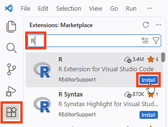
Extensions에서 R을 검색하고, 게시자가 REditorSupport인 R의 Install을 누른다.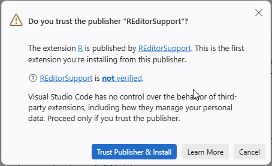
제작자를 믿는지 묻는 창에서 Trust Publisher & Install을 누른다. - 설치 후 활동 표시줄에 R 확장 프로그램 아이콘이 생겼는지 확인한다.
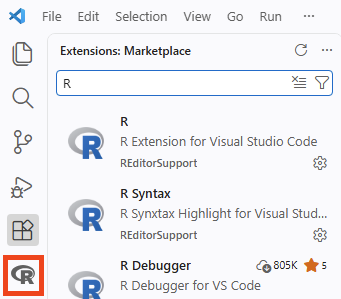
활동 표시줄에 생긴 R 확장 프로그램 아이콘
- Google Antigravity 확장 설치. 같은 확장 화면에서
Google Antigravity를 검색해 게시자가Google인 확장을 설치한다. 설치가 끝나면 왼쪽 막대에 생긴 Antigravity 아이콘을 눌러 Google 계정으로 로그인한다. 설치부터 응답 확인까지의 순서는 아래를 펼쳐 본다.Antigravity 확장 설치와 연결 자세히 보기
Google Antigravity는 Google의 AI 코딩 에이전트다. VS Code용 확장을 설치하면 편집기 옆에 에이전트 창이 생기고, 열어 둔 폴더의 파일을 읽고 고치는 일을 대화로 시킬 수 있다.
항목 내용 확장 이름과 게시자 Google Antigravity, 게시자 Google (식별자 Google.google-antigravity)필요한 것 VS Code 1.90 이상, Google 계정. 무료 요금제로도 쓸 수 있다. 운영체제 Windows, macOS, Linux - Extensions 항목에서
Antigravity를 검색한다. 이름이 비슷한 확장이 여럿 나오므로 아래 화면처럼 배포자가 Google인지 확인한 뒤 설치(Install)를 눌러 확장 프로그램을 설치한다.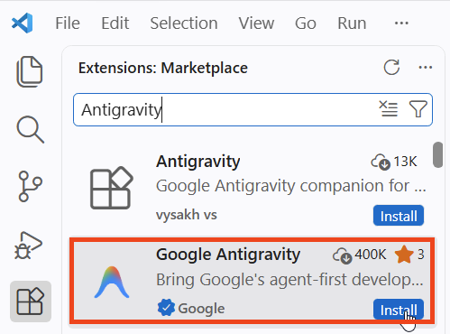
이름이 비슷한 확장이 함께 나온다. 배포자가 Google인 Google Antigravity의 Install을 누른다. - 활동 표시줄(Activity Bar)에 나타난 Antigravity 아이콘을 누르고, 화면에 나타나는 Continue with Google로 Google 계정을 이용한 절차를 진행한다.
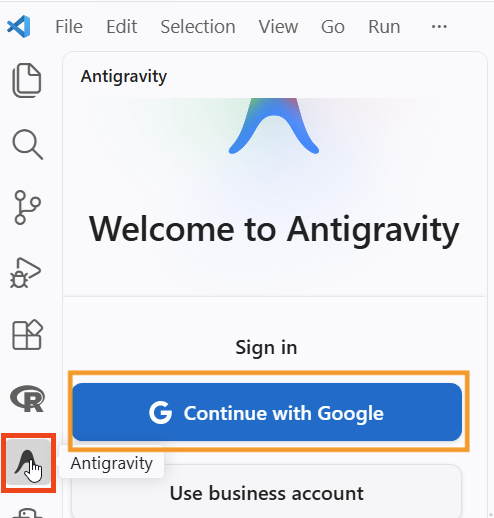
활동 표시줄의 Antigravity 아이콘을 누르고 Continue with Google을 누른다. - 한 가지 주의할 점이 있다. 로그인 과정 마지막에 웹 브라우저가 아래와 같이 물어볼 때 반드시 "열기"를 눌러야 로그인 정보가 제대로 전달된다. 누르면 브라우저에서 VS Code로 돌아온다.
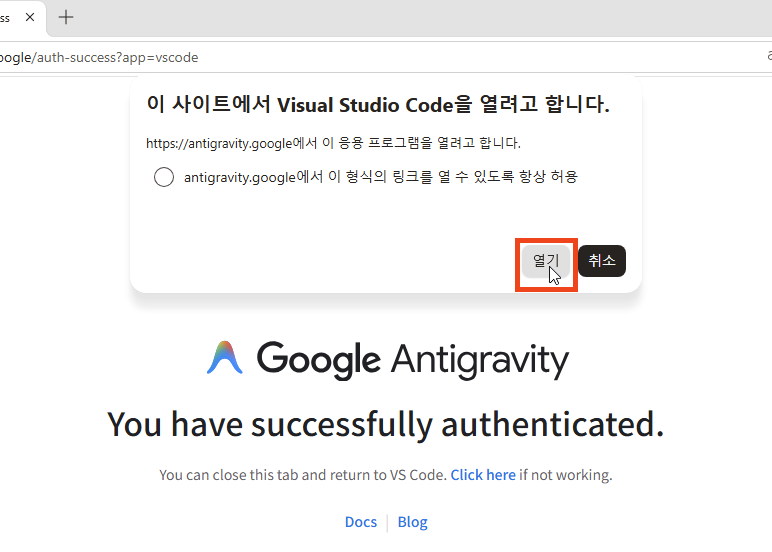
브라우저가 Visual Studio Code를 열지 물으면 열기를 누른다. 현재 Antigravity 확장은 근래에 지원하기 시작한 것이어서 로그인 과정이 불안한 경우가 있다. 로그인 과정을 여러 번 해야 할 수 있다.
- 처음 실행할 때 확장이 에이전트 실행에 필요한 프로그램(
agy)을 자동으로 내려받아 설치한다. 끝날 때까지 기다린다. - 에이전트 창에
이 폴더에 어떤 파일이 있는지 알려줘처럼 한 줄을 보내 응답이 오는지 확인한다.
- Extensions 항목에서
Windows: 터미널에서 R.exe를 바로 실행하게 하기
Windows용 R은 설치할 때 실행 파일의 위치를 PATH에 등록하지 않는다. R 확장은 R을 스스로 찾아 실행하므로 스크립트에서 Ctrl+Enter로 코드를 실행하는 것은 이 설정 없이도 되지만, VS Code의 일반 터미널(PowerShell)에 R.exe를 입력하면 찾을 수 없다는 오류가 난다. AI 에이전트가 터미널에서 스크립트를 실행하려 할 때도 같은 오류로 멈춘다. R의 bin 폴더를 PATH에 추가하면 해결된다. macOS는 이 설정이 필요 없다.
- R 실행. Windows+S를 누르면 나오는 아래쪽 검색창에
R을 입력해 R 실행 아이콘을 찾고, 눌러서 실행한다.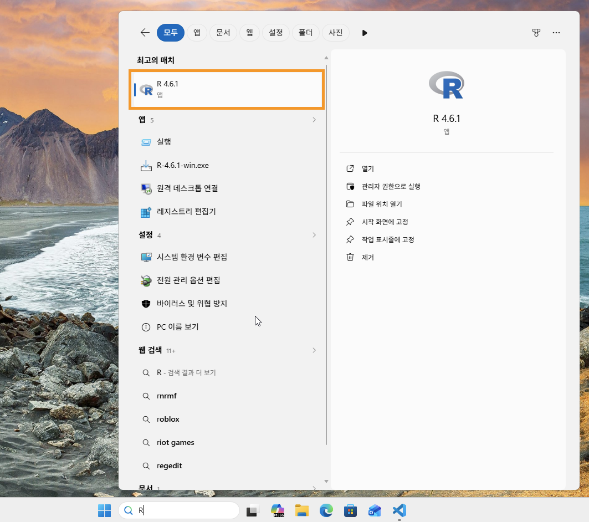
R 찾기 및 실행 - bin 폴더의 경로 확인. R이 열리면 Console 창에서 아래 한 줄을 실행하고, 결과로 나온 문자열을 따옴표는 빼고 복사한다. R을 설치한 폴더에서 실행 파일들이 있는
bin폴더의 전체 경로다. 보통C:\Program Files\R\R-4.x.x\bin꼴이다. 역슬래시가 두 개씩(\\) 보이는 것은 R이 문자열을 표시하는 방식이다. 아래 7번 그림처럼 그대로 붙여 넣어도 되고, 하나씩으로 고쳐도 된다. 파일 탐색기에서C:\Program Files\R아래의bin폴더를 찾아 주소 표시줄의 경로를 복사해도 된다.RnormalizePath(file.path(R.home(), "bin"))
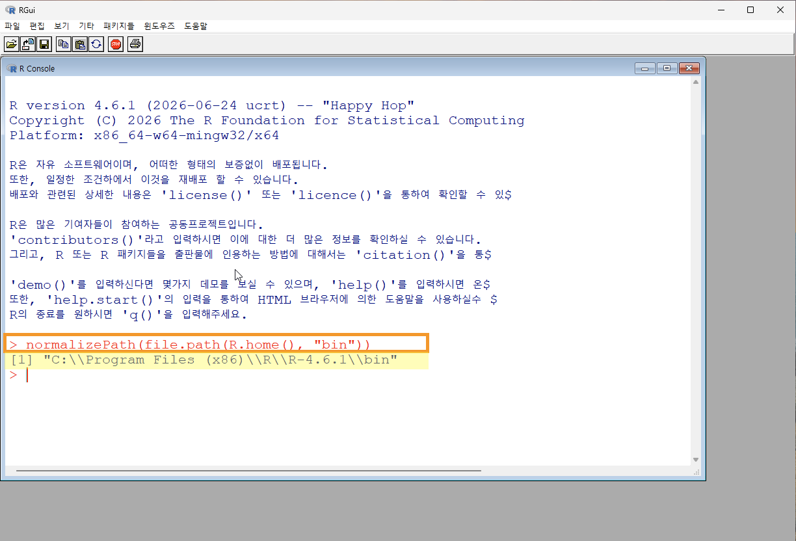
R을 설치한 경로에서 실행 파일들이 있는 bin 폴더의 절대 경로 출력 - 환경 변수 편집 항목 찾기. Windows+S를 누르면 나오는 아래쪽 검색창에서
환경변수를 검색하고, 나타나는 시스템 환경 변수 편집을 누른다. 관리자 암호를 묻거나 열리지 않으면 바로 아래의 계정의 환경 변수 편집을 누른다. 이때는 환경 변수 창이 바로 열리므로 4번을 건너뛴다.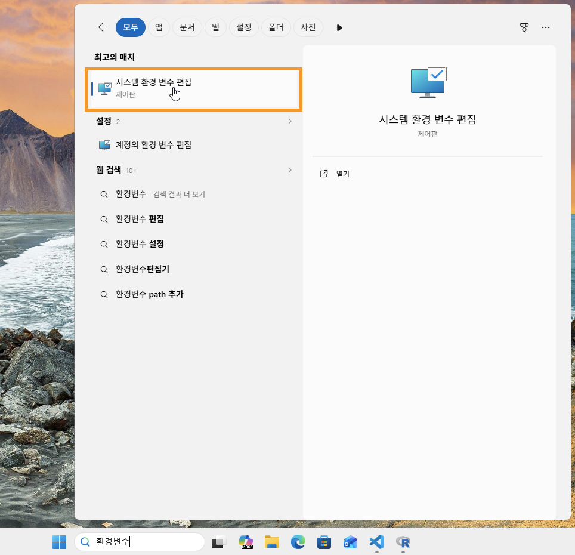
환경 변수 편집 항목 찾기 - 환경 변수 창 열기. 시스템 속성 창 아래쪽의 환경 변수를 누른다.
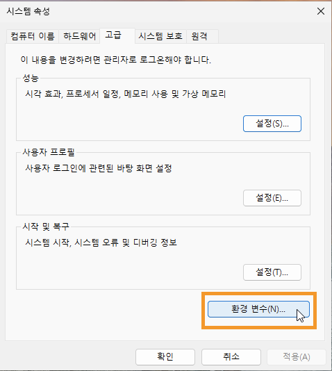
환경 변수 편집 메뉴 찾기 및 실행 - Path 찾기. 위쪽 사용자 변수 목록에서
Path를 찾아 누르고 편집을 누른다.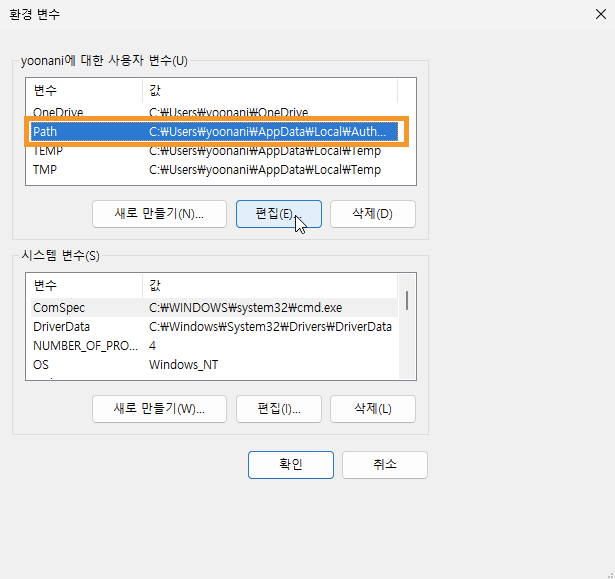
Path 환경 변수 찾기 - 새 값 추가. 오른쪽 위의 새로 만들기를 눌러 환경 변수 Path에 새로운 값을 추가한다.
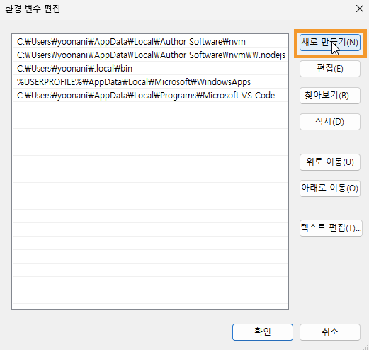
새로운 값 추가하기 - 경로 붙여 넣기. 앞서 R에서 복사한 값을 붙여 넣고(①), 아래쪽의 확인을 누른다(②). 남아 있는 환경 변수 창과 시스템 속성 창도 확인을 눌러 닫는다.
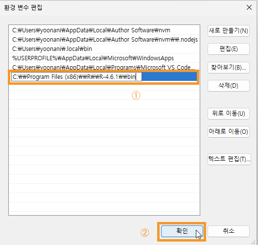
복사한 값 붙여 넣기 - 확인. VS Code를 열고 터미널을 활성화한 뒤(Ctrl+Shift+`)
R.exe를 입력하고 실행하면 R Console로 들어간다. VS Code가 이미 열려 있었다면 창을 모두 닫았다가 다시 연다. 바뀐 PATH는 새로 시작한 프로그램에만 적용된다. R을 끝낼 때는q()를 입력한다.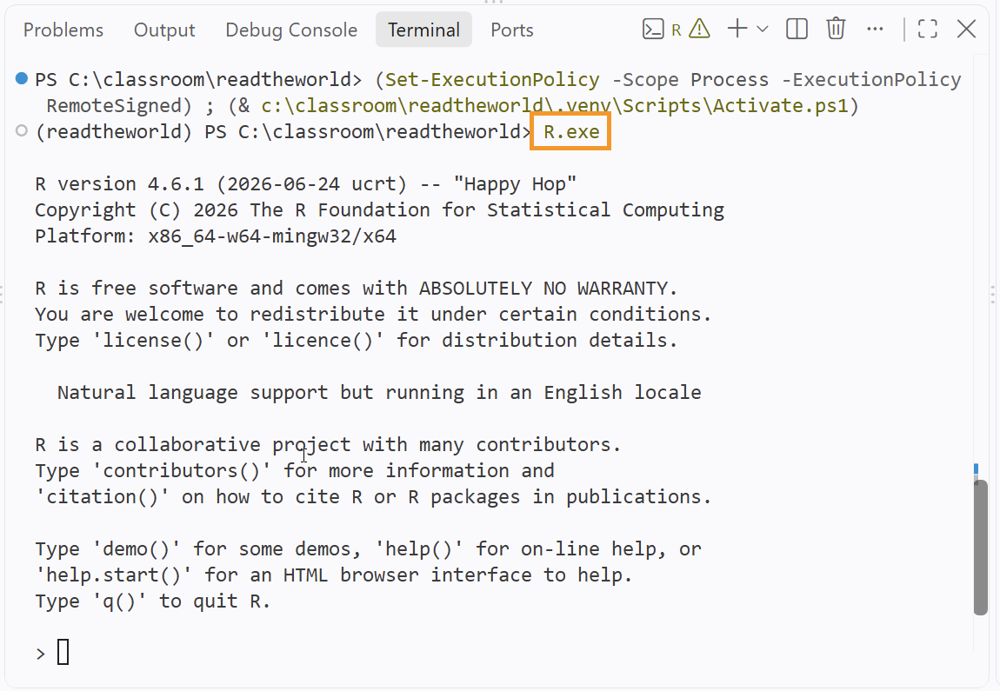
Terminal에서 R 실행
터미널에서 쓰는 명령은 아래와 같다. 첫 줄에서 R의 버전이 나오면 PATH 설정이 된 것이다. VS Code의 터미널은 열어 둔 폴더(프로젝트 루트)에서 시작하므로, 스크립트는 scripts/를 붙여 가리킨다. 셋째 줄의 02.prepare_datasets.R은 t 검정을 위한 데이터 준비에서 만드는 스크립트다. 실행할 스크립트의 이름으로 바꿔 쓴다.
R.exe --version # 버전이 나오면 PATH 설정이 된 것이다 R.exe # R을 대화형으로 시작한다. 끝낼 때는 q() Rscript.exe scripts/02.prepare_datasets.R # 프로젝트 루트에서, 스크립트 파일 전체를 실행한다
PowerShell에서는 R이 아니라 R.exe라고 적는다. PowerShell에서 r은 직전 명령을 다시 실행하는 내장 명령의 줄임말이어서, R만 입력하면 R이 시작되지 않는다.
R을 새 버전으로 올리면 설치 폴더 이름(R-4.x.x)이 바뀐다. Path에 넣은 경로도 새 폴더로 고친다.
- 패키지 설치. 아래 한 줄을 R에서 한 번만 실행한다. 패키지를 내려받는 저장소는
repos인수로https://cloud.r-project.org/를 지정한다. 저장소를 고르라는 창이 뜨지 않고, 가까운 서버로 자동 연결된다.type = "binary"는 운영체제에 맞게 미리 만들어 둔 설치 파일(바이너리)만 받으라는 뜻이다(아래 설명 참고).languageserver는 VS Code가 자동완성과 도움말을 띄우는 데 쓴다.tidyverse는 데이터를 읽고 다듬고 그리는 패키지 묶음이고(Excel을 읽는readxl도 함께 설치된다),writexl은 Excel 저장,effectsize는 효과크기 계산,extrafont는 그림에 한글 글꼴을 쓰는 데 쓴다. 설치에 몇 분 걸린다.
install.packages(
c("languageserver", "tidyverse", "writexl", "effectsize", "extrafont"),
repos = "https://cloud.r-project.org/",
type = "binary"
)type = "binary"를 적는 이유. 패키지가 새 버전으로 바뀌면 원본 코드(소스)가 먼저 올라오고, Windows용 바이너리는 며칠 뒤에 만들어진다. 그 사이에 type 없이 설치하면 R이 아래와 같이 알리고, 소스를 받아 내 컴퓨터에서 직접 컴파일해 설치할지 묻는다. 소스 설치는 오래 걸리고 컴파일 도구(Rtools)가 따로 있어야 한다. type = "binary"를 주면 묻지 않고 바이너리를 설치한다. 한 버전 앞선 것이 설치될 수 있지만 실습에는 지장이 없다.
There is a binary version available but the source version is laterDo you want to install from sources the package which needs compilation?
다른 패키지를 설치하다가 이 질문이 나오면 no를 고른다.
여기까지 하면 설치가 끝난다. 폴더를 열고 스크립트를 만들어 한 줄씩 실행하는 방법은 통계 자료 t 검정을 위한 데이터 준비의 첫 절에서 예제와 함께 따라 한다.
이 수업에서 AI에게 묻는 법
- 오류를 풀 때. R 터미널의 오류 메시지를 그대로 붙여 넣고 실행한 코드를 함께 준다. 예:
scripts/03.ttest.R의 12번째 줄에서 이 오류가 난다. 원인과 고친 코드를 알려줘. - 코드를 읽을 때. 예:
t.test(sodium_post ~ group, data = d)의 출력을 한 줄씩 설명해줘. - 내 데이터에 옮길 때. 예:
dataset/raw/mydata.xlsx의 첫 시트를 tidyverse로 읽고, group 열로 score 열의 평균을 비교하는 Welch 검정 코드를 써줘.
AI가 준 답은 직접 실행해 확인한다. 에이전트는 없는 함수나 인자를 지어내기도 하고, 검정을 잘못 고르기도 한다. 어떤 검정을 쓸지, 가설의 방향을 어떻게 둘지, 결과를 어떻게 해석할지는 스스로 정하고 설명할 수 있어야 한다. 에이전트가 파일을 고치겠다고 하면 바뀌는 내용을 읽어 본 뒤 승인한다. 개인정보가 들어 있는 연구 데이터는 에이전트에게 보내도 되는지 먼저 확인한다.